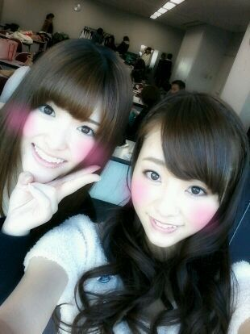

ほっほぉ〜い *・ω・* )))
ろってぃ-だよん。。♪
皆様...〃ω〃 今日も１日
おつかろってぃです /♪
大好きなさゆりんとぉ〜♪

今日は レコチョクlive☆
でした★☆★
メンバー32人で出演しました。
曲は、
・走れbicycle
・会いたかったかもしれない
・ぐるぐるカーテン
・おいでシャンプー
・制服のマネキン
の5曲を歌わせてもらいました。
感想。
ゥウォオwwwwwww
たくさんの人々
あたたかい歓声
綺麗に光る ペンライトたちっ☆
キラーン ! !
・・・
あ〜
最高だったなぁ〜(*´ω`*)
皆様 本当にありがとう
ございましたあっ (! ´∀`)
めちゃくちゃ
嬉しいキモチ。!!
ってやつだよ これは(〃∀〃)
私達の出番が
終わったあと、
何人かのメンバーで
加藤ミリヤさんや
ゴールデンボンバーさんの
liveを楽しませて
もらいました。
★☆★☆ ! !! !! !
色々 言いたいことある〃ω〃
書ききれないから...
とりあえず
楽し過ぎて
嬉し過ぎて...
感動して , , , ,
涙が出て...。
あとね、
ゴールデンボンバーさんがさっ、
おいでシャンプーを
やってくれました...(*´・ω・*)
感謝します。 ! !
今日のヘアスタイルは
ポニーテールってぃ-☆☆
明日は まちにまあった
名古屋 個別握手会です*^^*
サンタさんの服
着よっかなぁ〜 ?
恥ずかしいんやけどなぁ〜〃ω〃笑
ほな ,
そろそろ寝ましょうかねぇ♪
おやすみなさい´ω`*)
のし。
大好きです...